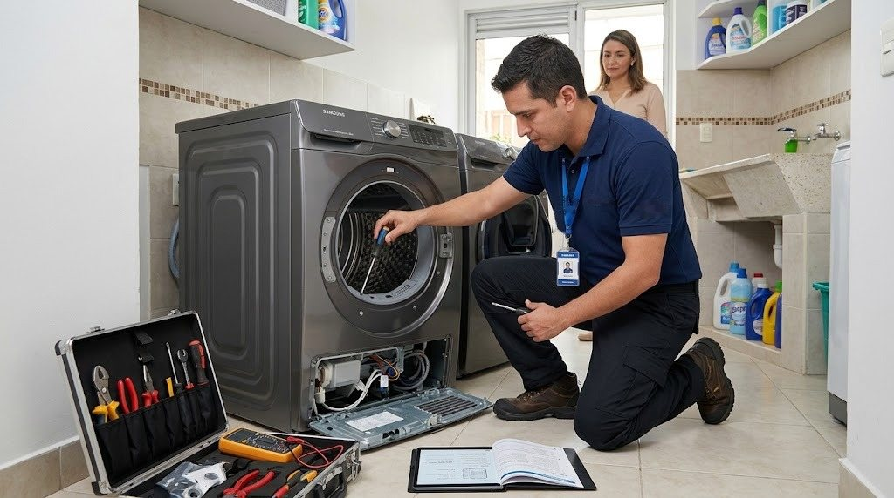

Servicio técnico de lavadoras Samsung en Panamá
Reparamos lavadoras Samsung de carga superior y de carga frontal a domicilio en Ciudad de Panamá: no centrifugan, no desaguan, hacen ruido, gotean o muestran códigos de error.

Qué lavadoras Samsung reparamos
- Carga superior
- Carga frontal
- Lavadoras con inverter y motor de transmisión directa
- Lavadoras con pantalla digital y códigos de error
- Lavasecadoras (lavan y secan en un solo equipo)

Cómo trabajamos en la lavadora Samsung
Revisamos el equipo en tu casa, te explicamos la falla y el costo antes de empezar y reparamos con garantía sobre la pieza y la mano de obra.
Fallas comunes de lavadoras Samsung y su causa probable
Estas son las que más vemos en Panamá. Si tu equipo tiene otro síntoma, escríbenos.
| Síntoma | Causa probable | Urgencia |
|---|---|---|
| No centrifuga o centrifuga con mucho ruido | Carga desbalanceada, amortiguadores o rodamientos desgastados, o problema del motor. | Revisar pronto |
| No desagua (queda agua en la tina) | Filtro de desagüe tapado, bomba de desagüe o manguera obstruida. | Revisar pronto |
| No llena de agua o llena muy lento | Llaves cerradas, malla de la manguera tapada, válvula de entrada o sensor de nivel. | Revisar pronto |
| Gotea o se sale el agua | Mangueras flojas, empaque de la puerta (en carga frontal), bomba o tina. | Urgente |
| La puerta no abre o no cierra | Seguro de la puerta (cerradura) o bisagra desgastada. | Revisar pronto |
| Muestra el código UE o vibra mucho | Carga desbalanceada o patas sin nivelar. | Vigilar |
| Huele mal o tiene moho | Humedad, exceso de detergente, empaque sucio o filtro lleno de pelusas. | Vigilar |
| No enciende o se apaga en medio del ciclo | Tarjeta de control, tomacorriente, variaciones de voltaje o falla del seguro. | Urgente |
| Deja pelusas o la ropa sale con residuos | Filtro de pelusas saturado o roto, exceso de detergente. | Vigilar |
Todo sobre la lavadora Samsung
Más sobre lavadoras Samsung
Fallas de lavadoras Samsung
Lavadoras Samsung por zona
Guías sobre lavadoras Samsung
Códigos de error de la lavadora Samsung: qué significan y qué hacer
Guía rápida de los códigos más comunes de las lavadoras Samsung (UE, 5E/SE, 4E, dE/DC, LE, HE) y qué revisar antes de llamar al técnico.
Leer →La lavadora Samsung no centrifuga: causas comunes
Si tu lavadora Samsung se queda con la ropa mojada y no centrifuga, revisa estas causas antes de llamar.
Leer →Moho y mal olor en la lavadora por la humedad de Panamá
El clima húmedo favorece el moho en la tina y el empaque. Cómo evitarlo y cómo limpiarlo.
Leer →Servicio técnico de lavadoras Samsung en Panamá
Reparamos lavadoras Samsung de carga superior y de carga frontal a domicilio en Panamá. Si tu lavadora no centrifuga, no desagua, no llena de agua, gotea, vibra de más, no enciende o muestra códigos de error como UE, 5E, 4E, dE o LE, nuestro técnico la revisa en tu casa y te explica la falla antes de reparar.
Lavadoras Samsung con motor inverter, EcoBubble y AddWash
Conocemos las líneas más usadas de Samsung: lavadoras con motor inverter Digital, tecnología de burbujas, puerta AddWash para agregar ropa en pleno ciclo y lavadoras con control digital. Revisamos tarjeta electrónica, bomba de desagüe, válvula de entrada de agua, seguro de la puerta, amortiguadores y rodamientos.
Fallas comunes de lavadoras Samsung y cómo evitarlas
La mayoría de problemas se previenen con hábitos simples: no sobrecargar el tambor, limpiar el filtro de desagüe, usar la cantidad de detergente adecuada, nivelar las patas y dejar la puerta entreabierta para evitar moho y mal olor, algo muy importante por la humedad de Panamá.
Lavadoras Samsung en apartamentos y torres de Panamá
En edificios coordinamos con la administración el horario, el ascensor de servicio y el ingreso de herramientas. En Panamá revisamos también el desagüe, las llaves de agua y la ventilación del cuarto de lavado, que muchas veces explican el problema.
¿Cuánto cuesta reparar una lavadora Samsung en Panamá?
Depende de la falla y de la pieza. Te damos el costo de la visita antes de ir y el de la reparación antes de empezar el trabajo, con garantía sobre la pieza y la mano de obra.
Preguntas frecuentes
¿Qué significan los códigos de error de la lavadora Samsung?
Algunos muy comunes: UE (carga desbalanceada), 5E o SE (problema de desagüe), 4E (entrada de agua), dE o DC (puerta) y LE (posible fuga de agua). Si el código no se va tras revisar lo básico, escríbenos.
¿Por qué mi lavadora Samsung no centrifuga?
La causa más común es una carga desbalanceada. Si pasa también con poca ropa, pueden ser los amortiguadores, el rodamiento o el motor.
¿Reparan lavadoras de carga superior y frontal?
Sí, atendemos las dos.
¿Puedo seguir usando la lavadora si gotea?
No lo recomendamos: el agua puede dañar el piso o las conexiones eléctricas. Cierra la llave y desconecta.
¿Cuánto cuesta la visita de diagnóstico?
Escríbenos por WhatsApp con el modelo y la falla; te confirmamos el costo de la visita antes de ir.
¿Atienden en apartamentos y torres?
Sí. Coordinamos horario y acceso con la administración del edificio.
¿Tu lavadora Samsung tiene una falla?
Escríbenos por WhatsApp con el equipo, el modelo y la falla. Te confirmamos disponibilidad para tu zona en minutos.